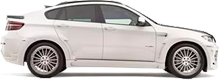

Первая
Мобильная
Автомойка
Ваша машина чистая Без очереди. По цене обычной мойки Выезд к вашемо автомобилю Безопасно для автомобиля
Записаться на мойку Как это работает?
Представьте, вы поставили машину на ночь на парковку, утром пришли, а она чистая и блестит, причем вы
можете оставить ее где угодно, у дома, ресторана, рядом с офисом и в любом другом месте.
Для нашего сервиса мойки автомобилей местоположение вашего авто не имеет значения.
Мобильная мойка уместна в любом городском районе или дворе, в общественных местах, где традиционная
мойка (с водой и мылом) запрещена категорически.
Как это возможно?
Наши мойщики не используют воды: это, пожалуй, главная особенность услуги. Вместо воды мы применяем специальную химию, которая не только очень эффективно устраняет грязь, но и бережно ухаживает за лакокрасочным слоем. Также она абсолютно безопасна для окружающие среды.
Как правило, мы принимаем заказы на мытье автомобиля снаружи, но если вы рядом с вашим авто мы
можем сделать и внутреннюю уборку,
а также помыть коврики.
Дополнительные плюсы
Чтобы вымыть автомобиль, используются эффективные и экологически безопасные
химические средства, которые бережно
ухаживают за автомобилем и его покрытием;
Наши мойщики профессионально и быстро справляются с поставленной задачей;
Сухая мойка включает в себя также попутную полировку, которая скроет недостатки вашего кузова (микротрещины, царапины, прочие дефекты).
| "Комфорт" | "Бизнес" |  "Внедорожник" | |
|
Мойка снаружи
мойка и полировка кузова + чернение шин в подарок |
400рублей |
500рублей |
600рублей |
|
Мойка с ковриками
мойка снаружи,ковриков и порогов + обработка приборной панели в подарок |
400рублей |
500рублей |
600рублей |
|
Комплексная мойка
мойка с ковриками, чистка салона пылесо- сом, протирка всех поверхностей изнутри + чистка багажника пылесосом в подарок |
400рублей |
500рублей |
600рублей |
|
Мойка снаружи
мойка и полировка кузова + чернение шин в подарок |
400рублей |
|
Мойка с ковриками
мойка снаружи,ковриков и порогов + обработка приборной панели в подарок |
400рублей |
|
Комплексная мойка
мойка с ковриками, чистка салона пылесосом, протирка всех поверхностей изнутри + чистка багажника пылесосом в подарок |
400рублей |
Время
Место
Экология
Средняя цена
Полировка
20 минут
Любое место
Не загрязняет
350-450 рублей
Включена в стоимость
30 минут
Только на автомойке
Большое затраты воды
450-550 рублей
За отдельную плату
Сухая мойка – современный способ сэкономить драгоценное время
Проживая в большом городе, начинаешь больше ценить время. Особенно это касается владельцев автомобилей, которые тратят часть своего свободного времени на простои в пробке. Высокая занятость на работе не позволяет не только себе уделить время, но и даже своему автомобилю, который частенько загрязняется. Мобильная автомойка в таких случаях очень помогла бы. Но стоит ли доверять своего «друга» незнакомцам? У нас есть ответ на этот вопрос!
Представляем вашему вниманию новый способ быстро и надежно избавить свой автомобиль от грязи – СУХАЯ МОЙКА. «Что это такое?», - спросите вы. Это уникальный и современный способ помыть автомобиль, не посещая мойку. То есть это выездная мойка. Удобство данной услуги состоит в следующем:
Вам никуда не нужно ехать, работники сделают это за вас;
Стоимость сухой мойки несколько ниже обычной;
Вам не придется ждать, когда ваш автомобиль помоют;
После одной мойки авто приобретет вид новой;
Полировка включена в стоимость услуги;
Быстро и без повреждений.
Сухая мойка авто – это лишняя возможность сэкономить ваше время. Сидя в офисе, в гостях или другом месте, мы сделаем всю работу за вас. Зачем ехать на автомойку, торчать в пробке больше часа, если есть возможность заказать услуги сухой мойки в любой конец города?..
Как сделать вызов? Позвоните по указанному номеру телефона, чтобы вызвать нашу бригаду. Обязательно укажите точный адрес, номер машины и другие данные, благодаря которым будет найден ваш автомобиль. По приезду вы сможете лично познакомиться со специалистами и понаблюдать за их работой. По окончанию – расчет. Все предельно просто! В спектр услуг входит полная мойка машины и полировка.
Если вы думаете, что мобильная мойка в вашем гараже сэкономит ваше время и деньги, то вы ошибаетесь! Услуги сухой мойки решают большинство ваших проблем, связанных с грязным автомобилем. Во-первых, у вас появится свободное время на себя. Во-вторых, это дешевле и быстрее, а в-третьих – пришло время попробовать современный и экологичный способ избавления машины от грязи.
Выбрав сухую мойку, вы сделаете правильный выбор!
Запишись на мойку
прямо сейчас!
Наш менеджер перезвонит и уточнит детали через 45 секунд
Записаться на мойку